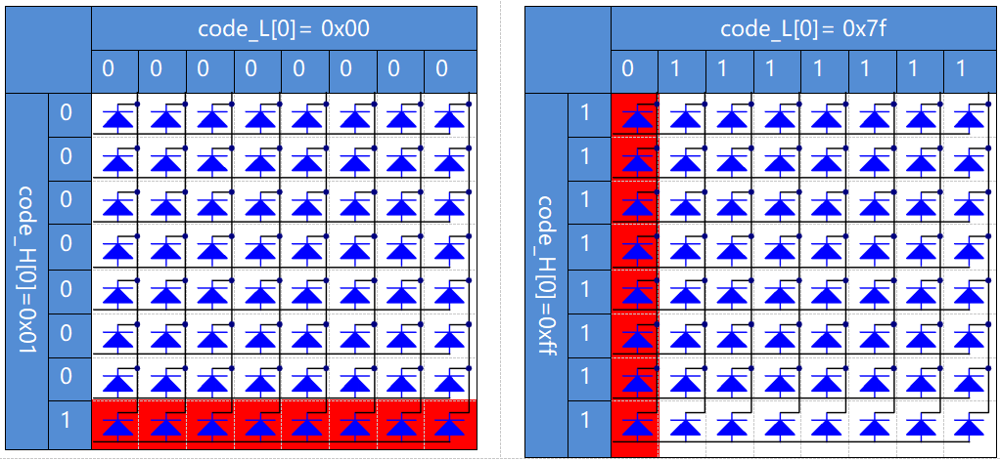

Nota
¡Hola! Bienvenido a la comunidad de entusiastas de SunFounder para Raspberry Pi, Arduino y ESP32 en Facebook. Adéntrate en el mundo de Raspberry Pi, Arduino y ESP32 junto a otros apasionados.
¿Por qué unirte?
Soporte experto: Resuelve problemas postventa y desafíos técnicos con la ayuda de nuestra comunidad y equipo.
Aprende y comparte: Intercambia consejos y tutoriales para mejorar tus habilidades.
Avances exclusivos: Accede anticipadamente a anuncios de nuevos productos y adelantos.
Descuentos especiales: Disfruta de descuentos exclusivos en nuestros productos más recientes.
Promociones y sorteos festivos: Participa en sorteos y promociones de temporada.
üëâ ¬øListo para explorar y crear con nosotros? Haz clic en [Aqu√≠] y únete hoy.
1.1.6 LED Dot Matrix
Introducción
Como su nombre lo indica, una matriz de puntos LED es una matriz compuesta por LEDs. La iluminación y el apagado de los LEDs crean diferentes caracteres y patrones.
Componentes

Principio
Matriz de puntos LED
Generalmente, las matrices de puntos LED se clasifican en dos tipos: cátodo común (CC) y ánodo común (CA). A simple vista son muy similares, pero internamente son diferentes. Puedes diferenciarlas mediante pruebas. En este kit se usa una de tipo CA. Verás la etiqueta «788BS» en el costado.
Observa la figura siguiente. Los pines están organizados en ambos extremos en la parte posterior. Toma la etiqueta como referencia: los pines en este extremo son los pines 1-8, y en el otro extremo son los pines 9-16.
Vista externa:

Las figuras siguientes muestran su estructura interna. En una matriz de puntos LED CA, ROW representa el ánodo del LED, y COL el cátodo; en una de tipo CC es lo contrario. En ambos tipos, los pines 13, 3, 4, 10, 6, 11, 15 y 16 son todos COL, mientras que los pines 9, 14, 8, 12, 1, 7, 2 y 5 son todos ROW. Si quieres encender el primer LED en la esquina superior izquierda, en una matriz de puntos CA, simplemente establece el pin 9 como alto y el pin 13 como bajo. En una de tipo CC, configura el pin 13 como alto y el pin 9 como bajo. Para iluminar toda la primera columna, en CA, configura el pin 13 como bajo y los ROW 9, 14, 8, 12, 1, 7, 2 y 5 como alto, y en CC, configura el pin 13 como alto y los ROW como bajo. Observa las siguientes figuras para una mejor comprensión.
Vista interna:

Numeración de pines correspondiente a las filas y columnas anteriores:
COL |
1 |
2 |
3 |
4 |
5 |
6 |
7 |
8 |
Pin No. |
13 |
3 |
4 |
10 |
6 |
11 |
15 |
16 |
ROW |
1 |
2 |
3 |
4 |
5 |
6 |
7 |
8 |
Pin No. |
9 |
14 |
8 |
12 |
1 |
7 |
2 |
5 |
Además, se utilizan dos chips 74HC595 en este proyecto. Uno controla las filas de la matriz de puntos LED y el otro, las columnas.
Diagrama esquemático
T-Board Name |
physical |
wiringPi |
BCM |
GPIO17 |
Pin 11 |
0 |
17 |
GPIO18 |
Pin 12 |
1 |
18 |
GPIO27 |
Pin 13 |
2 |
27 |
{kind=link}
Procedimientos experimentales
Paso 1: Construye el circuito. Dado que el cableado es complejo, vamos a hacerlo paso a paso. Primero, inserta el T-Cobbler, la matriz de puntos LED y los dos chips 74HC595 en la protoboard. Conecta los pines 3.3V y GND del T-Cobbler a los agujeros en los dos lados de la protoboard, luego conecta el pin 16 y el pin 10 de ambos 74HC595 a VCC, y los pines 13 y 8 a GND.
Nota
En la imagen de Fritzing anterior, el lado con la etiqueta está en la parte inferior.
{kind=link}
Paso 2: Conecta el pin 11 de los dos 74HC595 juntos y luego a GPIO27; luego el pin 12 de ambos chips y a GPIO18; a continuación, el pin 14 del 74HC595 en el lado izquierdo a GPIO17 y el pin 9 al pin 14 del segundo 74HC595.

Paso 3: El 74HC595 en el lado derecho controla las columnas de la matriz de puntos LED. Observa la tabla a continuación para la asignación. Los pines Q0-Q7 del 74HC595 están asignados a los pines 13, 3, 4, 10, 6, 11, 15 y 16 respectivamente.
74HC595 |
Q0 |
Q1 |
Q2 |
Q3 |
Q4 |
Q5 |
Q6 |
Q7 |
LED Dot Matrix |
13 |
3 |
4 |
10 |
6 |
11 |
15 |
16 |

Paso 4: Ahora conecta las filas (ROW) de la matriz de puntos LED. El 74HC595 en el lado izquierdo controla las filas de la matriz de puntos LED. Consulta la tabla siguiente para ver la asignación. Observamos que los pines Q0-Q7 del 74HC595 en el lado izquierdo están asignados a los pines 9, 14, 8, 12, 1, 7, 2 y 5 respectivamente.
74HC595 |
Q0 |
Q1 |
Q2 |
Q3 |
Q4 |
Q5 |
Q6 |
Q7 |
LED Dot Matrix |
9 |
14 |
8 |
12 |
1 |
7 |
2 |
5 |

Para Usuarios del Lenguaje C
Paso 5: Ingresa a la carpeta del código.
cd ~/davinci-kit-for-raspberry-pi/c/1.1.6/
Paso 6: Compila el código.
gcc 1.1.6_LedMatrix.c -lwiringPi
Paso 7: Ejecuta el código.
sudo ./a.out
Después de ejecutar el código, la matriz de puntos LED se ilumina y apaga fila por fila y columna por columna.
Nota
Si no funciona después de ejecutarlo o aparece un mensaje de error: "wiringPi.h: No such file or directory», consulta c code is not working?.
Código
#include <wiringPi.h>
#include <stdio.h>
#define SDI 0 //entrada de datos serial
#define RCLK 1 //entrada de reloj de memoria (STCP)
#define SRCLK 2 //entrada de reloj del registro de desplazamiento (SHCP)
unsigned char code_H[20] = {0x01,0xff,0x80,0xff,0x01,0x02,0x04,0x08,0x10,0x20,0x40,0x80,0xff,0xff,0xff,0xff,0xff,0xff,0xff,0xff};
unsigned char code_L[20] = {0x00,0x7f,0x00,0xfe,0x00,0x00,0x00,0x00,0x00,0x00,0x00,0x00,0xfe,0xfd,0xfb,0xf7,0xef,0xdf,0xbf,0x7f};
void init(void){
pinMode(SDI, OUTPUT);
pinMode(RCLK, OUTPUT);
pinMode(SRCLK, OUTPUT);
digitalWrite(SDI, 0);
digitalWrite(RCLK, 0);
digitalWrite(SRCLK, 0);
}
void hc595_in(unsigned char dat){
int i;
for(i=0;i<8;i++){
digitalWrite(SDI, 0x80 & (dat << i));
digitalWrite(SRCLK, 1);
delay(1);
digitalWrite(SRCLK, 0);
}
}
void hc595_out(){
digitalWrite(RCLK, 1);
delay(1);
digitalWrite(RCLK, 0);
}
int main(void){
int i;
if(wiringPiSetup() == -1){ // si la inicialización de wiring falla, imprime mensaje en pantalla
printf("setup wiringPi failed !");
return 1;
}
init();
while(1){
for(i=0;i<sizeof(code_H);i++){
hc595_in(code_L[i]);
hc595_in(code_H[i]);
hc595_out();
delay(100);
}
for(i=sizeof(code_H);i>=0;i--){
hc595_in(code_L[i]);
hc595_in(code_H[i]);
hc595_out();
delay(100);
}
}
return 0;
}
Explicación del Código
unsigned char code_H[20] = {0x01,0xff,0x80,0xff,0x01,0x02,0x04,0x08,0x10,0x20,0x40,0x80,0xff,0xff,0xff,0xff,0xff,0xff,0xff,0xff};
unsigned char code_L[20] = {0x00,0x7f,0x00,0xfe,0x00,0x00,0x00,0x00,0x00,0x00,0x00,0x00,0xfe,0xfd,0xfb,0xf7,0xef,0xdf,0xbf,0x7f};
El array code_H representa los elementos de las filas de la matriz de puntos LED, mientras que el array code_L se refiere a los elementos de las columnas. Cuando se muestran caracteres, se obtiene un elemento de fila y otro de columna y se asignan a los dos chips HC595 respectivamente, formando así un patrón en la matriz de puntos LED. Toma como ejemplo el primer número de code_H, 0x01, y el primer número de code_L, 0x00.
0x01 convertido a binario es 00000001; 0x00 convertido a binario es 0000 0000.
En este kit se utiliza una matriz de puntos LED de ánodo común, por lo que solo se encienden los ocho LEDs en la octava fila. Cuando se cumplen las condiciones de que code_H es 0xff y code_L es 0x7f, los ocho LEDs en la primera columna se encienden.
void hc595_in(unsigned char dat){
int i;
for(i=0;i<8;i++){
digitalWrite(SDI, 0x80 & (dat << i));
digitalWrite(SRCLK, 1);
delay(1);
digitalWrite(SRCLK, 0);
Escribe el valor de dat en el pin SDI del HC595 bit a bit. El valor inicial de SRCLK se estableció en 0, y aquí se configura en 1, lo que genera un pulso de flanco ascendente, luego desplaza la fecha del pin SDI (DS) al registro de desplazamiento.
void hc595_out(){
digitalWrite(RCLK, 1);
delay(1);
digitalWrite(RCLK, 0);
El valor inicial de RCLK se estableció en 0, y aquí se configura en 1, lo que genera un flanco ascendente y luego transfiere los datos del registro de desplazamiento al registro de almacenamiento.
while(1){
for(i=0;i<sizeof(code_H);i++){
hc595_in(code_L[i]);
hc595_in(code_H[i]);
hc595_out();
delay(100);
}
}
En este bucle, los 20 elementos de los dos arrays, code_L y code_H, se cargarán en los dos chips 74HC595 uno por uno. Luego se llama a la función hc595_out() para transferir los datos del registro de desplazamiento al registro de almacenamiento.
Para Usuarios de Python
Paso 5: Ingresa a la carpeta del código.
cd ~/davinci-kit-for-raspberry-pi/python
Paso 6: Ejecuta.
sudo python3 1.1.6_LedMatrix.py
Después de ejecutar el código, la matriz de puntos LED se ilumina y apaga fila por fila y columna por columna.
Código
Nota
Puedes Modificar/Restablecer/Copiar/Ejecutar/Detener el código a continuación. Pero antes, necesitas estar en la ruta de origen del código como davinci-kit-for-raspberry-pi/python.
import RPi.GPIO as GPIO
import time
SDI = 17
RCLK = 18
SRCLK = 27
# usamos la matriz BX, fila para ánodo y columna para cátodo
# FILA ++++
code_H = [0x01,0xff,0x80,0xff,0x01,0x02,0x04,0x08,0x10,0x20,0x40,0x80,0xff,0xff,0xff,0xff,0xff,0xff,0xff,0xff]
# COL ----
code_L = [0x00,0x7f,0x00,0xfe,0x00,0x00,0x00,0x00,0x00,0x00,0x00,0x00,0xfe,0xfd,0xfb,0xf7,0xef,0xdf,0xbf,0x7f]
def setup():
GPIO.setmode(GPIO.BCM) # Numeración de GPIO por su ubicación BCM
GPIO.setup(SDI, GPIO.OUT)
GPIO.setup(RCLK, GPIO.OUT)
GPIO.setup(SRCLK, GPIO.OUT)
GPIO.output(SDI, GPIO.LOW)
GPIO.output(RCLK, GPIO.LOW)
GPIO.output(SRCLK, GPIO.LOW)
# Desplaza los datos hacia el 74HC595
def hc595_shift(dat):
for bit in range(0, 8):
GPIO.output(SDI, 0x80 & (dat << bit))
GPIO.output(SRCLK, GPIO.HIGH)
time.sleep(0.001)
GPIO.output(SRCLK, GPIO.LOW)
GPIO.output(RCLK, GPIO.HIGH)
time.sleep(0.001)
GPIO.output(RCLK, GPIO.LOW)
def main():
while True:
for i in range(0, len(code_H)):
hc595_shift(code_L[i])
hc595_shift(code_H[i])
time.sleep(0.1)
for i in range(len(code_H)-1, -1, -1):
hc595_shift(code_L[i])
hc595_shift(code_H[i])
time.sleep(0.1)
def destroy():
GPIO.cleanup()
if __name__ == '__main__':
setup()
try:
main()
except KeyboardInterrupt:
destroy()
Explicación del Código
code_H = [0x01,0xff,0x80,0xff,0x01,0x02,0x04,0x08,0x10,0x20,0x40,0x80,0xff,0xff,0xff,0xff,0xff,0xff,0xff,0xff]
code_L = [0x00,0x7f,0x00,0xfe,0x00,0x00,0x00,0x00,0x00,0x00,0x00,0x00,0xfe,0xfd,0xfb,0xf7,0xef,0xdf,0xbf,0x7f]
El array code_H representa los elementos de la fila de la matriz, y el array code_L se refiere a los elementos de la columna. Cuando se muestran caracteres, se obtiene un elemento de la fila y uno de la columna y se asignan respectivamente a los dos chips HC595. Así, se muestra un patrón en la matriz de puntos LED. Tomemos como ejemplo el primer número de code_H, 0x01, y el primer número de code_L, 0x00.
0x01 convertido a binario es 00000001; 0x00 convertido a binario es 0000 0000.
En este kit se aplica una matriz de puntos LED de ánodo común, por lo que solo los ocho LEDs en la octava fila se iluminan. Cuando se cumplen las condiciones de que code_H es 0xff y code_L es 0x7f simultáneamente, estos 8 LEDs en la primera columna se encienden.
for i in range(0, len(code_H)):
hc595_shift(code_L[i])
hc595_shift(code_H[i])
En este bucle, estos 20 elementos en los dos arrays, code_L y code_H, se cargarán en el chip HC595 uno por uno.
Nota
Si deseas mostrar caracteres en la matriz de puntos LED, consulta el código en Python disponible en: https://github.com/sunfounder/SunFounder_Dot_Matrix.
Imagen del Fenómeno